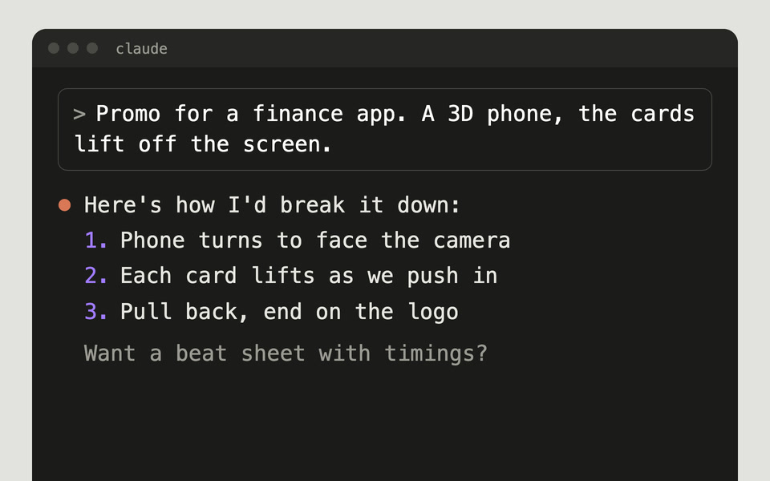
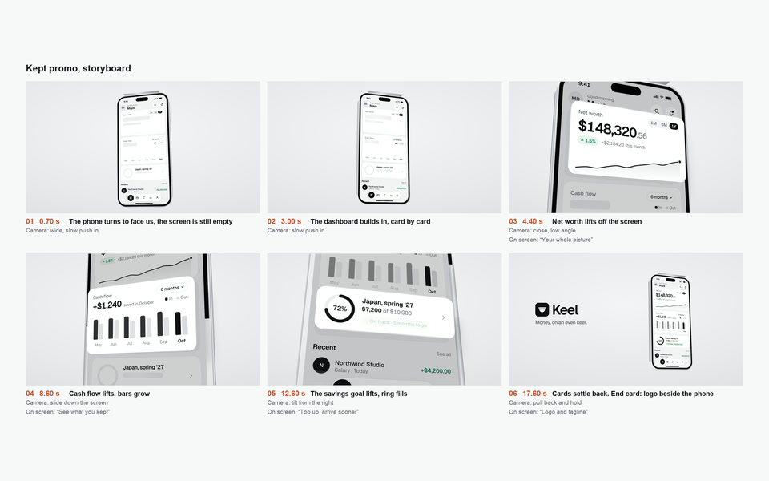
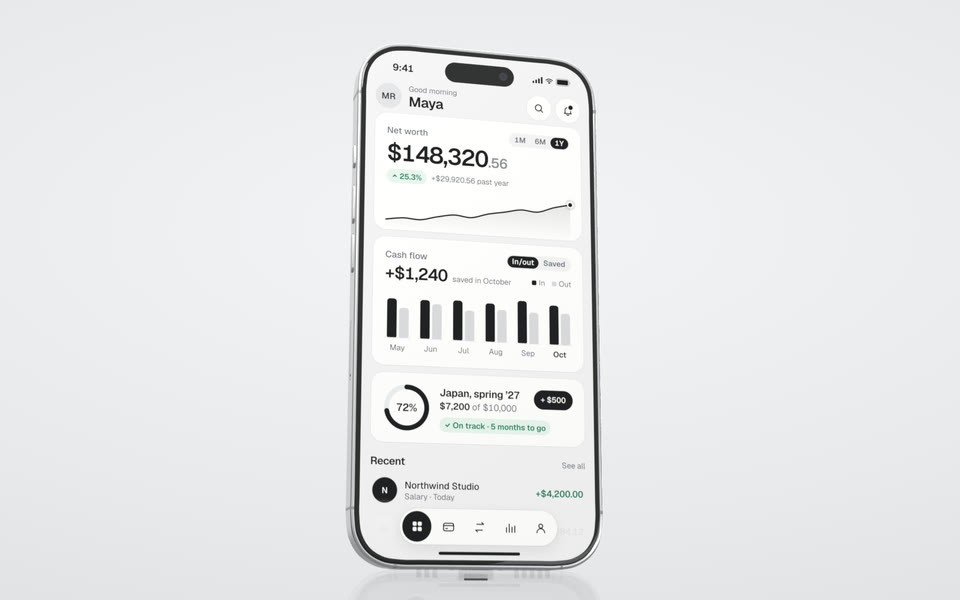
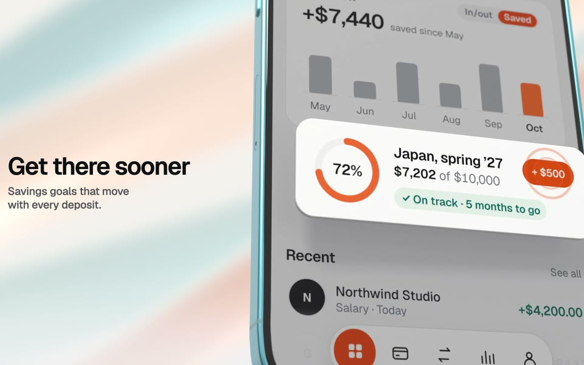

Motion Design Subagents & Skills
I love motion design, and I wanted to see how AI could speed up the way I plan and build it. So I built a motion design subagent, plus a set of skills that structure and refine the process the way I want it. Together they have helped me make promo videos for my work, build motion in code and tell better stories.
- Claude Code
 Cursor
Cursor- Blender
- Remotion
 ElevenLabs
ElevenLabs
Process
I Don't Start with a Render
Rendering in 3D is expensive. A render can take hours, and fixing one small mistake can take hours more. So I spend most of my time planning and testing low-fidelity prototypes before I build the final piece.

Start with an Idea
I come in with a direction and talk through how to build it. That becomes a beat sheet: what happens, when, and where the camera is.

Storyboard
One still frame for each beat, built in plain HTML and CSS. This is where changes are cheap.
Block It Out
A playable low-fidelity prototype in HTML and CSS. The shapes are rough, but the timing, camera path and choreography are real.

Test It in Blender
A quick low-resolution render and a few stills show me the scene, the materials and the lighting.

Render and Iterate
Blender renders the full piece at 1080p. I watch it, fix what is off and render again until it is right.
Sound and Music
Music and sound effects come from ElevenLabs, cut to land on the beats.
Animations
Animations I Built with Claude Code
My Little Assistant
A cozy film about Claude Code as my little assistant, helping with my design process. I wanted to test how well Fable 5.2 could make a full-length 3D video in Blender with realistic lighting, and how closely it could follow my prompts and feedback. I learned to break longer pieces with several scenes into separate shots. Otherwise every change means re-rendering the whole video, which takes 10 to 16 hours each time.
Kept
A promo for a fictional finance app. I believe motion helps tell a story, so I made this video to show what the app could do. I experimented with timing, UI motion, sound effects and music. It became the foundation for how I approach new motion work.
Phone Promo and Laptop Loop
I got tired of good-looking UI mockups being locked behind a paywall. That was the original reason I built the subagent and skills. I wanted these assets built exactly how I like them, without paying for a service or running out of credits. I started with motion for the UI alone, moved on to 3D renders of the mockups, then added prompts to control the camera. It makes my work more engaging than a static image I bought and can't change.